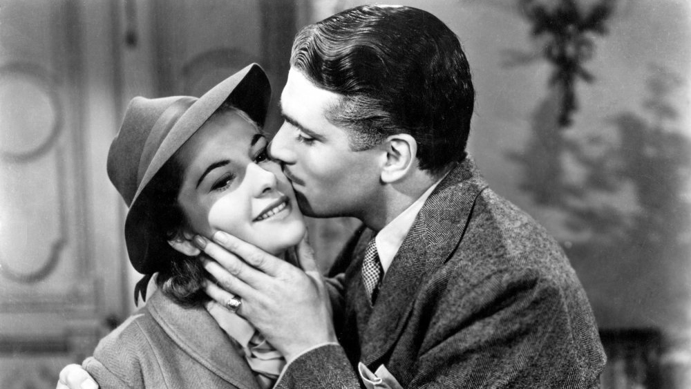
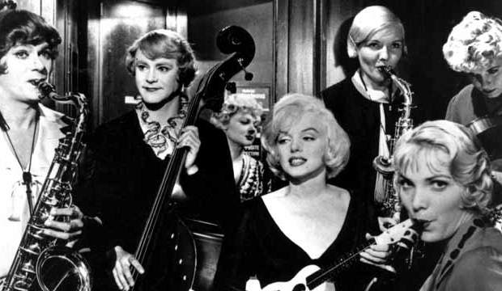
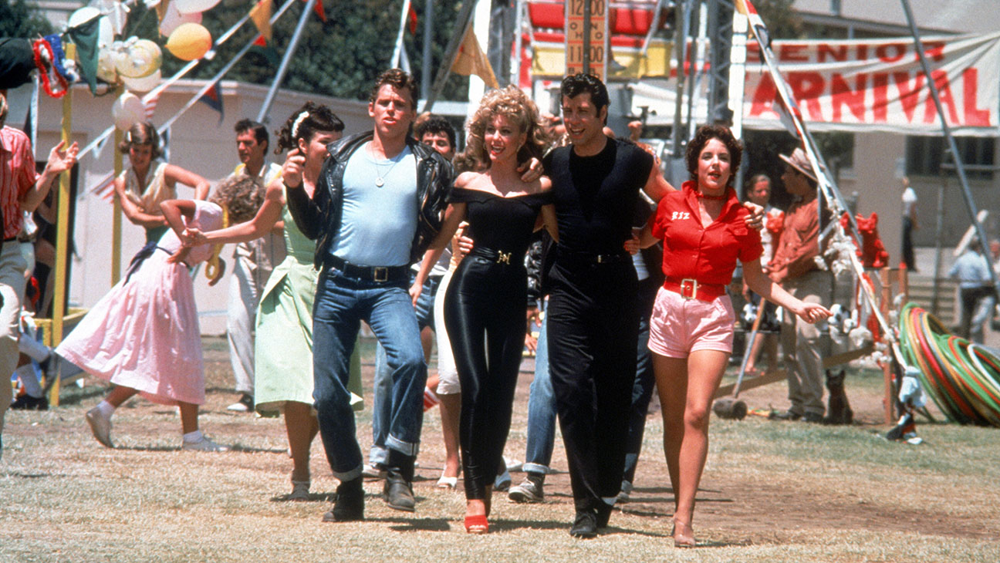
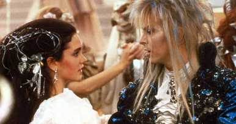
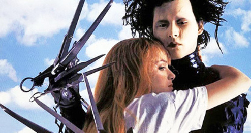
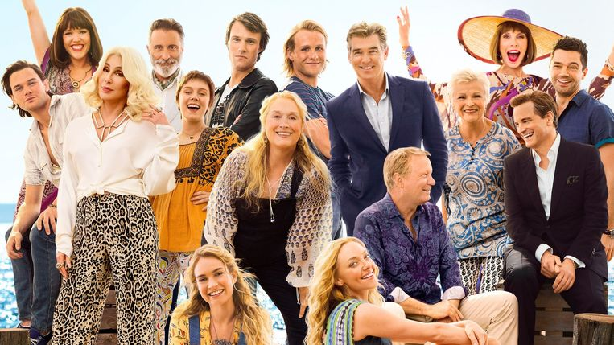
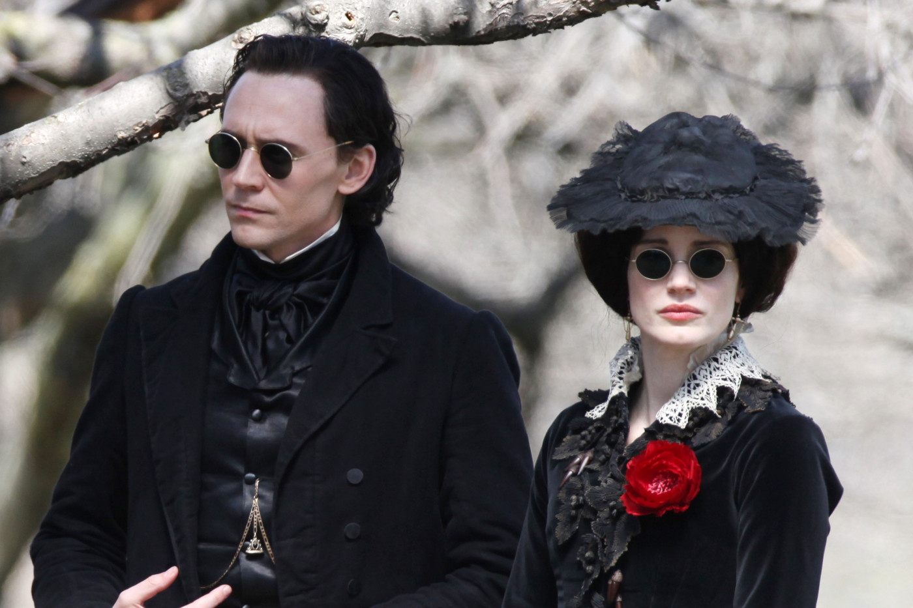

Rebecca (1940)
Alfred Hitchcock

Een jongedame werkt als gezeldschapsdame voor de rijke mevrouw
Van Hopper. Tijdens de reis naar Monte Carlo ontmoet ze weduwnaar
Maxim de Winter. Ze raken verliefd en zijn binnen een paar weken getrouwd.
Nadat de tweede mevrouw de Winter in zijn huis woont, wordt ze door de
hoofddienst dame niet goed behandeld. Mevrouw de Winter probeert dan
troost op te zoeken bij haar man, maar hij gedraagt zich raar vanwege zijn
verleden met de voormalige mevrouw de Winter die hem blijft achtervolgen.
Some like it hot (1959)
Billy Wilder

Twee muzikanten, Joe en Jerry, hebben moeite om geld te verdienen.
Ze proberen overal te soliciteren, maar er blijft één vacature over
die bedoeld is voor vrouwen. De vacature zoekt twee
vrouwen die in een vrouwenbandje kunnen spelen. Joe en Jerry gaan
zich voordoen als vrouwen om hun kan als nog te grijpen. Later leren
ze de zangeres van de band Sugar kennen, Jerry wordt verliefd op haar
en struggelt met zijn vermomming als vrouw.
West Side Story (1961)
Jerome Robbins, Robert Wise

In Manhattan, zomer 1957, is er een strijd tussen twee straatbendes.
Ze strijden om de macht in de straten. De ene straatbende bestaat
uit blanke migrantenkinderen en de andere van Puerto Ricaanse afkomst.
Er komt een schoolfeest aan en er gebeurt is dramatisch. Tony, een
jongen van de blanke bende, probeert indruk te maken op Maria,
een Puerto Ricaanse meisje. De broer van Maria, hoofd van de Puerto
Ricaanse bende, accepteert hun relatie niet. Toch houdt het Maria en
Tony niet tegen om van elkaar te houden.
Grease (1978)
Randal Kleiser

Sandy en Danny ontmoeten elkaar op vakantie, worden verliefd en
nemen afscheid. Later verhuist Sandy naar de plek waar Danny woont
en komen ze elkaar tegen op dezelfde school. Toen Danny haar eerst
zag na de vakantie, was hij blij om haar weer te zien. Al snel
verandert Danny zijn gedrag, omdat hij op school de coole type is
en helemaal niet past bij de brave Sandy.
Labyrinth (1986)
Jim Henson

Een tienermeisje Sarah heeft een halfbroertje Toby waar ze vaak
op moet passen, als haar vader en stiefmoeder uitgaan. Ze kan Toby
niet meer handelen en wilt van hem af, dat doet ze d.m.v. een boek
die een toverkracht bezit. De goblins nemen haar broertje mee en
brengen hem naar de goblin koning, Jareth. Toen dit eenmaal gebeurde,
was Sarah bezorgd en ging ze naar de fanasiewereld om haar broertje
terug te halen.
Edward Scissorhands (1990)
Tim Burton

Een jongeman, genaamd Edward Scissorhands, is een uitvinding van een
oude man. Op een dag sterft de uitvinder en blijft Edward achter in
een duistere landhuis. Niet lang erna wordt hij ontdekt door een
doornormale verkoopster. Zij maakt zorgen om hem en neemt hem mee naar
huis. Langzamerhand komt Edward in aanraking met de buurtbewoners,
maar wordt niet altijd geaccepteerd.
Mamma Mia! (1999)
Catherine Johnson

Sophie en haar moeder Donna wonen op een klein Grieks eiland, waar
Donna haar eigen business runt. Sophie bereidt zich voor haar bruiloft
met haar jeugdliefde Sky. Ondertussen probeert ze uit te vinden wie
haar vader is, aangezien Donna met drie mannen tegerlijkertijd een
relatie had. De drie mannen komen uit verschillende landen en worden
uitgenodigd.
Crimson peak (2015)
Guillermo del Toro

De Amerikaanse schrijfster Edith Cushing leert de Britse Thomas
Sharpe kennen en wordt snel verliefd op hem. Edith trouwt met Thomas
en trekt in bij zijn gigantische huis. Ze merkt dat er in het huis
mysterieuze gebeurtenissen heeft plaatsgevonden en dat zoekt ze uit.
Ook komt ze erachter dat haar man geheimen heeft waarvan zij helemaal
niks van afweet.